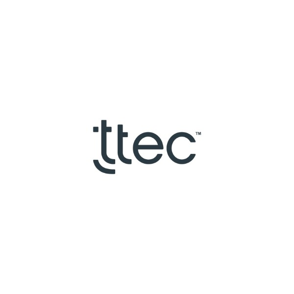

Copyright © 2023 Rajendra Chepuri. All rights reserved.
Hi, I'm Rajendra!
Creative Data Scientist Coder Analyst
Based out of Hyderabad, India
I'm a Hyderabad based Data Scientist & Professional developer with 10+ years of experience

- Nice to meet you!
Rajendra Prasad Chepuri
Data Scientist & Developer Coder PlayerHello there! My name is Rajendra Prasad Chepuri. I am a Data Scientist & developer, and I'm very passionate and dedicated to my work.
With 10 years experience as a Data Analytics professional , I have acquired the skills and knowledge necessary to make your project a success. I enjoy every step of the design process, from discussion and collaboration.
- Age 31
- Born In Hyderabad, India
- Mail rajendraprasadchepuri@gmail.com
- Phone +91 967 626 0340
-
10+
Years of Experience -
66+
Projects Completed -
12+
Happy Clients
- Experience
Everything about me!
-

2022 - Present
Lead Data Scientist
TTEC DigitalDeveloped and implemented end-to-end data pipeline to ingest, process, prepare, transform and enrich structured, unstructured, and semi-structured data in governed manner for Health Insurance and Automobile Clients.
During my role as Lead Data Scientist at TTEC Digital, I have had the privilege of contributing to a wide array of projects, with a focus on serving automobile and insurance-based clients, including esteemed names such as General Motors (GM) and Kaiser Permanente. These experiences have been both enriching and impactful.
One of the standout projects I've been involved in is in collaboration with General Motors. Specifically, we concentrated on the Customer Care and After Sales division. In this capacity, I played a pivotal role in developing predictive models aimed at forecasting dealer retention and service level retention. These models were designed to provide insights at various levels, spanning dealers, vehicle categories, and timeframes, including monthly and yearly forecasts. By leveraging advanced analytics and machine learning techniques, we were able to enhance GM's understanding of customer behavior, allowing for more strategic decision-making in dealer management and service delivery.
In another noteworthy endeavor, I had the opportunity to work closely with Kaiser Permanente. For this client, I led the development and implementation of an end-to-end data pipeline. This pipeline was designed to ingest, process, prepare, transform, and enrich structured, unstructured, and semi-structured data in a governed and efficient manner. This robust data infrastructure has significantly improved Kaiser Permanente's ability to harness insights from their data, enhancing their decision-making processes and operational efficiency.
Furthermore, I took the initiative to optimize pilot routing between agents and customers by developing a PTB (Propensity To Buy) model using cutting-edge AI and ML techniques. This model has had a substantial impact on enhancing the efficiency and effectiveness of customer interactions, ultimately benefiting both the company and its clients.
My tenure at TTEC Digital has allowed me to not only work on diverse and impactful projects but also to continually expand my expertise in data science and its applications in the automotive and insurance industries. I am proud to have contributed to projects that have made a tangible difference in improving customer experiences, operational efficiency, and decision-making for our clients.
-
 2020 - 2022
2020 - 2022Lead Data Scientist
NCR CorporationPredictive Maintenance for NCR Self-Checkout Machine Components, building a predictive model to identify failures in BNR/BCR component. This solution uses classical machine learning techniques to identify failures.
During my tenure as Lead Data Scientist at NCR Corporation, I engaged in diverse projects spanning the domains of retail, banking and financial services (BFS), and commerce. One of the significant projects I contributed to was the implementation of predictive maintenance for self-checkout machines. In this initiative, I harnessed the power of machine learning and neural network architectures to accurately forecast potential machine failures. By preemptively identifying these issues, we could proactively raise service requests, preventing any inconvenience to customers.
Another noteworthy endeavor was the development of Dynamic Incident Management and Cash Management solutions using analytical modules. These projects aimed to optimize operational efficiency and customer experience within the retail and commerce sectors. Leveraging advanced analytics, I collaborated to design solutions that facilitated real-time decision-making, streamlined incident management processes, and enhanced cash flow management.
Notably, my contributions extended to innovations that resulted in patent filings for select projects. These patents underscore the innovative and impactful nature of the solutions developed during my time at NCR Corporation.
Throughout my role as Lead Data Scientist, I continuously honed my expertise in applying data science methodologies to real-world challenges in the realms of retail, BFS, and commerce. My experience at NCR Corporation allowed me to not only contribute to impactful projects but also to drive innovation through advanced technologies and analytical techniques.
-
 2017 - 2020
2017 - 2020Senior Data Scientist
Cyient LimitedWorked on various projects related to predictive maintenance and analytical solutions for engineering clients across globe. A wide range of technology stack have been used for projects for different use cases.
During my role as a Senior Data Scientist at Cyient Insights India, a subsidiary of Cyient Limited, I have had the privilege of engaging in a wide array of projects spanning multiple domains within the engineering sector. These projects have been both diverse and dynamic, involving clients from heavy engineering, telecommunications, transportation, aerospace, and medical devices industries. My experiences at Cyient have been incredibly rewarding and have allowed me to contribute to various cutting-edge analytics initiatives.
One of the standout projects I've had the opportunity to be a part of is the Riskscape and Firefly projects. These projects incorporated drone-based imagery data, presenting unique challenges and opportunities. Within the scope of these projects, we were tasked with the identification of building outlines from aerial images, as well as pinpointing organizational logos (points of intersection) within images captured during transportation processes. This work involved the use of advanced image processing and computer vision techniques, highlighting our commitment to leveraging the latest technologies to provide innovative solutions to our clients.
One of the particularly enriching aspects of my role at Cyient has been the chance to collaborate with clients in different countries. Through onsite collaborations, I've had the privilege of working with clients in Australia and Germany. These international collaborations have provided me with a broader perspective on global engineering challenges and have allowed me to engage with diverse teams and work cultures.
In summary, my tenure as a Senior Data Scientist at Cyient Insights India has been marked by a diverse and impactful portfolio of projects spanning various engineering domains and incorporating state-of-the-art technologies. These experiences have not only enriched my expertise in data science but have also given me the opportunity to make meaningful contributions to the success of our clients in the global engineering sector. I look forward to continuing to drive innovation and deliver valuable insights in my role at Cyient.
-
 2015 - 2017
2015 - 2017Data Science Engineer
Mirabel TechnologiesMirabel’s Marketing manager is a Marketing automation product, which involves Business Intelligence Data Base of Corporate Information and recommendations based on the metrics. Worked on building various predictive modules for products.
During my tenure as a Data Science Engineer at Mirabel Technologies India Private Limited, I had the opportunity to contribute to the development of two key products, each designed to leverage data-driven insights to empower businesses. My role was integral in harnessing data from various sources to provide valuable information about companies and the individuals within them.
One of the products I worked on focused on Business Intelligence. This involved the scrapping of data from diverse sources to compile comprehensive company profiles, including detailed information about the individuals associated with these companies. By aggregating this data, we provided our clients with a powerful tool for market research, lead generation, and business development. This project required a deep understanding of data scraping techniques and data integration, which I successfully applied to deliver high-quality data products.
The other product I contributed to was Mirabel's Marketing Manager, which is a marketing automation solution. This platform included analytical modules that added predictive capabilities to classify companies and their respective industries. By implementing advanced analytics, we enabled our clients to make data-driven decisions when targeting potential customers and tailoring marketing strategies. Additionally, I had the opportunity to work on a recommendation system for customers, which aimed to enhance user engagement and satisfaction by delivering personalized content and services.
My role as a Data Science Engineer at Mirabel Technologies provided me with hands-on experience in data collection, processing, and the development of data-driven solutions. These experiences not only strengthened my technical skills but also allowed me to contribute to products that have a tangible impact on businesses' success by providing actionable insights and automation capabilities.

- Services
rajendraprasadchepuri@gmail.com
My Services
-
01
Data Scrapping
Extracting business intelligence from websites, we respect rules and copyrights. Using Python and Scrapy, we ensure data accuracy and store it in NoSQL databases. Empower your decisions with our expertise in scraping and insights.
Uncover Valuable Insights with Data Scraping
Our Data Scraping services empower you with the ability to extract essential business intelligence from various websites. We specialize in gathering company information and profiling individuals within these organizations. While some of our projects serve as showcases of our capabilities, they're fully compliant with website robots.txt files and respect copyright laws.
Proven Expertise
We have a wealth of experience in developing web scrapers tailored to your needs. Our portfolio showcases successful projects that demonstrate our proficiency in extracting and organizing data for actionable insights.
Robust Technology Stack
We utilize Python programming and the Scrapy framework to perform scraping operations. The gathered data is stored efficiently in NoSQL data sources, primarily MongoDB. This combination of technology ensures data accuracy, reliability, and scalability.
Compliance and Ethical Data Gathering
We adhere to ethical data scraping practices. Our processes are aligned with website robots.txt files, and we always respect the copyrights and ownership of website content by the respective companies.
Unlock Insights, Drive Decisions
Leverage our extensive experience with scraping methodologies and NoSQL databases to unlock valuable insights. The information we gather empowers data-driven decision-making, helping you stay ahead in your industry.
-
 02
02Analytical Solutions
Unlock data's hidden potential with our Analytics Solutions. Our expertise in descriptive, predictive, and prescriptive analytics, powered by advanced technologies, ensures data-driven decisions that drive growth and efficiency.
Unlocking Insights with Data Analytics Solutions
Are you ready to harness the power of data to drive informed decisions and gain a competitive edge? Look no further. Our data analytics and solutions service offers a comprehensive suite of offerings that leverages the full spectrum of analytics: descriptive, predictive, and prescriptive.
Proven Expertise
With a track record of over 50 successful projects in the realm of analytics, we bring a wealth of experience and domain knowledge to the table. Our team of seasoned data scientists and analysts has honed their skills in diverse industries, delivering actionable insights and tangible results.
Cutting-Edge Technologies
We stay at the forefront of technological advancements, employing state-of-the-art machine learning and deep learning algorithms to extract hidden patterns and trends from your data. Our proficiency in Python, R, and Julia enables us to build robust, scalable solutions tailored to your specific needs.
Descriptive Analytics
Our descriptive analytics services enable you to gain a deeper understanding of your historical data. We transform raw data into meaningful visualizations, dashboards, and reports, providing clarity on past performance and helping you identify areas for improvement.
Predictive Analytics
Anticipate the future with confidence. Our predictive analytics solutions utilize advanced modeling techniques to forecast outcomes, whether it's predicting customer behavior, sales trends, or equipment failures. Stay ahead of the curve and make proactive decisions.
Prescriptive Analytics
Move beyond prediction to prescription. Our prescriptive analytics services offer data-driven recommendations and strategies to optimize your operations, enhance resource allocation, and maximize efficiency. Say goodbye to guesswork.
Tailored Solutions
We understand that every business is unique. That's why our analytics solutions are tailored to your specific industry, challenges, and goals. Whether you're in healthcare, finance, e-commerce, or any other sector, we have the expertise to deliver results that matter.
Data-Driven Decision-Making
In today's data-driven world, making decisions based on gut feeling is a thing of the past. Embrace the power of data with our analytics and solutions service. Gain insights that drive growth, reduce costs, and enhance your competitive advantage.
Get Started
Ready to embark on your data analytics journey? Contact us today to discuss your project, goals, and challenges. Let's turn your data into a strategic asset and pave the way for a brighter, more data-informed future.
-
 03
03Business Intelligence
Gain a competitive edge through our Business Intelligence services. We've delivered over 50 projects, offering tailored insights, data mining, and visualization, empowering you to make informed, strategic decisions in real-time.
Empower Your Business with Business Intelligence
Unlock the potential of your data and transform it into actionable insights that drive success. Our Business Intelligence (BI) service offers a wealth of expertise in generating customer-driven KPI reports, data mining, information discovery, intelligent decision-making, business forecasting, data visualization, and BI standardization.
Proven Expertise
With a successful track record of over 10 BI projects, we bring a depth of experience and domain knowledge to the table. Our team of dedicated experts specializes in delivering tailored solutions that align with your unique business objectives.
Key Offerings
- Customer-Driven KPI Reports: We create Key Performance Indicator (KPI) reports that matter to your business, providing valuable insights into your performance metrics and helping you make informed decisions.
- Data Mining and Information Discovery: Unearth hidden trends, patterns, and opportunities within your data through our advanced data mining and information discovery techniques.
- Intelligent Decision-Making: Leverage data-driven decision-making processes to gain a competitive edge and respond swiftly to changing market dynamics.
- Business Forecasting: Accurately predict future trends and outcomes to optimize resource allocation and strategic planning.
- Data Visualization: Transform complex data into visually compelling insights with the help of cutting-edge visualization tools and techniques.
- BI Standardization: Establish robust BI standards and practices to ensure consistency, reliability, and scalability across your organization.
Technologies and Tools
We harness a comprehensive set of technologies and tools to deliver top-notch BI solutions:
- BI Platforms: Microsoft BI (MSBI), Oracle BI, Talend
- Programming Languages: Python, R, Julia
- Visualization Tools: Power BI, Tableau, QlikView
Your Path to Informed Decision-Making
Empower your organization with the insights it needs to thrive in today's competitive landscape. Contact us today to discuss your BI project, goals, and challenges. Let's embark on a journey of data-driven success together.
-
 04
04Research & Developemt
Innovation is at our core. We've successfully pioneered AI, data mining, and information security projects, even securing patents. Collaborating with top universities, we drive research-based solutions and are currently advancing Advanced Driver Assistance Systems (ADAS).
Driving Innovation in Data and Information Technology
At our core, we are dedicated to advancing the frontiers of technology through cutting-edge research and development. Our focus lies in the realms of Artificial Intelligence, Data Mining, and Information Security, where we have consistently delivered groundbreaking solutions that push the boundaries of what's possible.
Proven Research Expertise
Our track record speaks for itself. We have successfully executed research-driven projects in Artificial Intelligence, Data Mining, and Information Security. Our commitment to excellence has led to the patenting of a project, showcasing our innovative approach and unique contributions to the field.
Academic Collaborations
We believe that the best solutions are born from collaboration. That's why we actively partner with prestigious universities to drive research-based solutions. Through collaborations in computer vision and analytics projects, we stay at the forefront of emerging technologies and trends.
Current Research Endeavors
As a research scholar at Woxsen University, we are at the forefront of Advanced Driver Assistance Systems (ADAS). Our current research focuses on enhancing road safety and revolutionizing the driving experience through cutting-edge technology. Stay tuned for the latest developments in this exciting field.
Your Partner in Innovation
Whether you're seeking groundbreaking solutions, research collaborations, or innovation partnerships, we are your dedicated partner in driving technological advancements. Contact us today to explore how we can work together to shape the future of data and information technology.
-
05
ML Operatios
Empower your data-driven projects with our MLOps expertise. We seamlessly deploy analytics models at scale, utilizing CI/CD frameworks across Azure, GCP, AWS, and more. Experience efficiency, scalability, and real-world impact.
Empowering Data-Driven Projects with MLOps Excellence
Unlock the true potential of your data-driven projects with our cutting-edge Machine Learning Operations (MLOps) services. We specialize in implementing MLOps for large-scale deployment of analytics models, ensuring seamless integration, continuous development, and continuous deployment across various cloud platforms.
Proven Expertise
Our track record of success speaks volumes. We have a wealth of experience in implementing MLOps frameworks, enabling organizations to efficiently manage and scale their machine learning models for real-world applications.
Multi-Cloud Mastery
Our expertise extends across major cloud platforms, including Azure, Google Cloud (GCP), and Amazon Web Services (AWS). We have successfully developed and deployed MLOps frameworks in these environments, allowing you to choose the platform that best suits your needs.
Key Services and Capabilities
- Continuous Development & Deployment: We embrace industry-leading continuous integration and continuous deployment (CI/CD) frameworks, such as Azure MLOps, GitHub Actions, and more, to ensure your machine learning models are always up-to-date and ready for deployment.
- Integration with Leading Tools: We seamlessly integrate MLOps with powerful tools and services like Databricks and Azure Machine Learning Services, enabling efficient model development, testing, and deployment.
- Custom Solutions: We understand that each project is unique. That's why we offer customized MLOps frameworks tailored to your specific requirements, whether you prefer cloud-based solutions or dedicated servers.
Your Partner in MLOps Excellence
Empower your data-driven projects with the efficiency and scalability of MLOps. Contact us today to discuss how we can help you implement MLOps frameworks that drive real-world impact and innovation.
-
 06
06Product Development
Transform ideas into reality with our Product Development services. We've crafted successful products for clients and our own Vizlyt.ai. Our expertise includes enhancing model performance, data analytics integration, and creating Proof of Concepts for innovative solutions.
Innovative Product Development for Your Vision
Our product development services are geared towards transforming your ideas and requirements into real-world solutions. With a rich history of successfully delivering products for clients and our own groundbreaking project, Vizlyt.ai, we have the expertise and dedication to bring your vision to life.
Proven Experience
We've crafted and delivered numerous products for satisfied clients across various industries. Our portfolio showcases a diverse range of products that have made a tangible impact on businesses and markets.
Current Endeavors
Our latest project, Vizlyt.ai, is a testament to our commitment to innovation. In the realm of visualization, Vizlyt.ai is set to revolutionize data analytics by enhancing model performance and providing a powerful framework for solutions and Proof of Concepts.
Key Capabilities
- Customized Solutions: We tailor our product development approach to your unique requirements, ensuring that the end result aligns perfectly with your vision and goals.
- Data Analytics Mastery: Our capabilities extend beyond product development; we excel in enhancing model performance and incorporating data analytics modules to make your products smarter and more powerful.
- Proof of Concepts: We offer expertise in developing Proof of Concepts (PoCs) to validate the feasibility and viability of your ideas, helping you make informed decisions before committing to full-scale development.
Your Partner in Innovation
Whether you're a startup with a groundbreaking idea or an established business looking to expand your product portfolio, we're your dedicated partner in turning concepts into reality. Contact us today to discuss how we can collaborate on your next product development project.
- Projects
Recent completed works


-
Quick Freight is dedicated to maintaining its position as an industry leader in the logistics sector. The company's commitment lies in continuously investing in advanced technology solutions and nurturing a team of talented individuals. Quick Freight primarily acts as an intermediary, facilitating transactions between customers and freight services. They charge customers for their services and manage transactions with freight services
Built an Analytics solution to predict price for shipment given various features of carrier and customer demographics and product level information to estimate price for shipment.Various Machine learning algorithms are implemented to build the system. Interms of technology, Python Programming for analytics and model building and deployment, along with PowerBI for visualization.
- Client Quick Frieght Services
- Category Analytics
- Date April 10, 2020
-
Share


- Testimonial
What People say?
-
I highly recommend Rajendra and his organization for analytics solutions. Rajendra, who served on my team at Cyient for over 2 years as a Data Scientist, consistently exhibited exceptional dynamism and a strong work ethic, delivering outstanding results in short and long-term projects. With his programming, AI, and analytical skills, Rajendra adeptly resolves AI challenges. Moreover, his commitment to staying updated with the latest AI algorithms, innovations, and research makes him a dependable choice. I have full confidence in Rajendra and his organization's capabilities to provide top-notch analytics solutions.
Dr.Venkatramana Miryala
Principal Data Scientist at Cyient
-
I wholeheartedly recommend Rajendra and his organization for analytics solutions. Rajendra, who was an invaluable part of my team for over 2 years, is not only a highly talented data scientist but also possesses a genuine passion for continuous learning. His humility and willingness to assist others make him a true team player. Rajendra's exceptional skills and qualities undoubtedly make him and his organization an outstanding choice for analytics solutions.
Kun Zhu
Data Science Leader at NCR Corporation
-
I had the pleasure of working closely with Rajendra on several data-driven initiatives. His expertise in data analytics & machine learning. and his meticulous attention to detail have consistently impressed me. Rajendra's contributions were pivotal in solving complex data challenges, and I look forward to more successful collaborations with him.
Sandeep Yempati
Data Analyst at Nova Solutions
- Blog
My blog & news
-

 September 26, 2023
September 26, 2023
Introduction:
Data scraping, a method employed to extract structured information from websites, is a crucial technique in the contemporary data-driven ecosystem. When employed ethically and legally, it assists businesses in acquiring insights and making informed decisions, fueling advancements in various sectors. This article delves into my experience with data scraping from renowned websites like ZoomInfo, Data.com, Lead411, and LeadFerret using Python and its diverse libraries such as Scrapy, Requests, and Beautiful Soup.
Data Scraping and Its Relevance:
Data scraping involves programmatically interacting with the internet to collect information from websites. This technique is instrumental in acquiring lead information, market research, and competitive analysis. It empowers businesses and individuals to access publicly available data that could be pivotal for strategy formulation and implementation.
Leveraging Python for Data Scraping:
Python, with its extensive libraries and ease of learning, is the premier language for data scraping endeavors. It boasts libraries like Scrapy, Requests, and Beautiful Soup, which facilitate the extraction of data from websites seamlessly.
1. Scrapy:
Scrapy is a high-level, open-source framework designed for data scraping and crawling websites. It’s incredibly efficient, scalable, and handles requests asynchronously, making it suitable for scraping large volumes of data. During my experience, Scrapy’s resilience and versatility were instrumental in extracting structured information from websites like ZoomInfo and Lead411.
2. Requests:
The Requests library is the de facto standard for making HTTP requests in Python. It abstracts the complexities of making requests, providing a simple API for sending HTTP/1.1 requests. With it, I was able to interact with the web pages of Data.com and LeadFerret to retrieve the necessary HTML containing the desired data.
3. Beautiful Soup:
Beautiful Soup is a library designed to scrape information from web pages. It creates parse trees and assists in navigating, searching, and modifying the parse tree. Beautiful Soup was pivotal in parsing and extracting structured data from the HTML acquired from the aforementioned websites.
Case Study: Scraping Business Lead Websites:
ZoomInfo:
ZoomInfo provides comprehensive information on businesses and professionals. I used Scrapy to crawl the site and extract essential lead information such as company names, contact details, and employee roles. Scrapy’s ability to manage multiple requests concurrently ensured efficiency and effectiveness in the data extraction process.
Data.com:
Data.com is a repository of valuable business information. I employed the Requests library to interact with Data.com’s web pages and retrieve relevant HTML. Then, I utilized Beautiful Soup to parse the HTML and extract the required structured data, which included business names, addresses, and contact details.
Lead411:
Lead411 offers detailed information on various businesses. By leveraging the Scrapy framework, I extracted pertinent business and professional data, which included names, email addresses, and company roles. The scalability and resilience of Scrapy were paramount in navigating through the multiple pages and collecting the data seamlessly.
LeadFerret:
LeadFerret serves as a resourceful platform offering extensive details on business leads. Using the combination of Requests and Beautiful Soup, I navigated through the site, collected, and structured essential data points like contact information and professional roles from the raw HTML.
Ethical and Legal Considerations:
While data scraping is a powerful tool, it’s essential to employ it responsibly, ethically, and legally. It’s pivotal to respect the website’s `robots.txt` file, which outlines the scraping permissions and constraints, and adhere to the applicable data protection laws like GDPR. Responsible scraping entails respecting website terms of service, ensuring data privacy, and limiting request rates to avoid overloading the servers.
Conclusion:
Data scraping is an invaluable technique in the realm of data acquisition, aiding in deriving insights and informed decision-making. Python, with its rich libraries like Scrapy, Requests, and Beautiful Soup, stands out as the ideal language for web scraping endeavors. The combination of these tools enabled the effective extraction of structured information from sites like ZoomInfo, Data.com, Lead411, and LeadFerret, providing a treasure trove of insights. However, the power of data scraping comes with the responsibility to use it ethically and legally, respecting the rights and privacy of the data subjects and the integrity of the source websites.
By sharing this journey of extracting business lead information, I aim to illuminate the potentials and practices of data scraping, inspiring budding data enthusiasts and seasoned professionals alike to explore, innovate, and create responsibly in the expanding universe of data.
- Let's Connect
Get in touch
I'm currently avaliable to take on new projects, so feel free to send me a message about anything that you want to run past me. You can contact anytime at 24/7